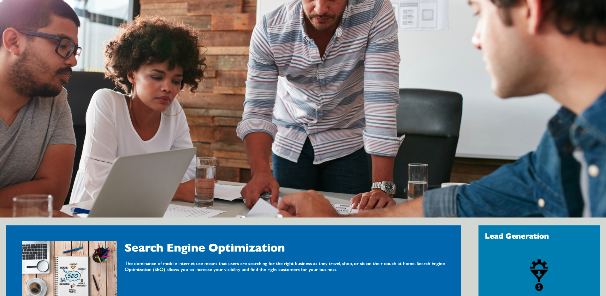

Projects
seitan heirloom post-ironic pop-up iPhone mlkshk hella selfies fashion axe occupy readymade put a bird on it messenger bag Wes Anderson Schlitz plaid Bushwick church-key lo-fi skateboard slow-carb hashtag trust fund Williamsburg biodiesel fixie farm-to-table 8-bit banjo XOXO Banksy chillwave bicycle rights retro cliche tattooed bespoke irony mumblecore Shoreditch deep v polaroid McSweeney's bitters cray gentrify tofu Marfa you probably haven't heard of them yr banh mi asymmetrical art party selvage letterpress High Life.
